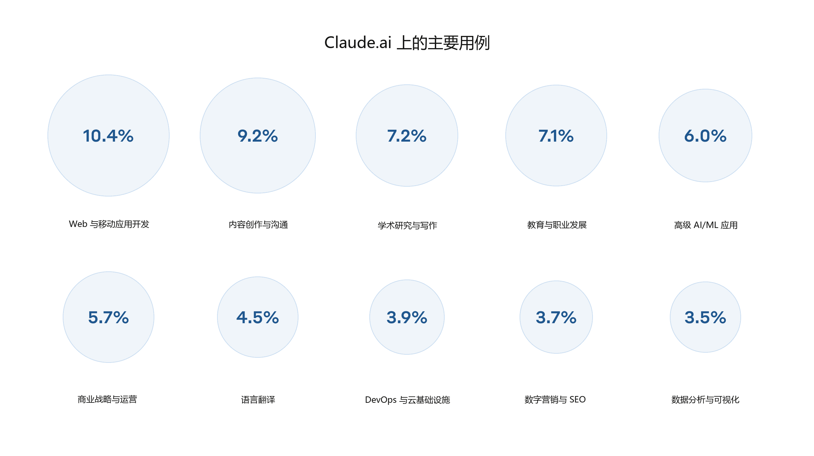
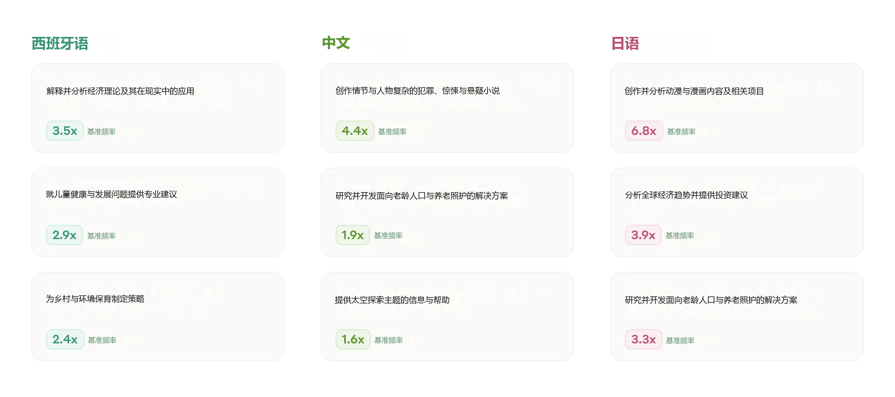
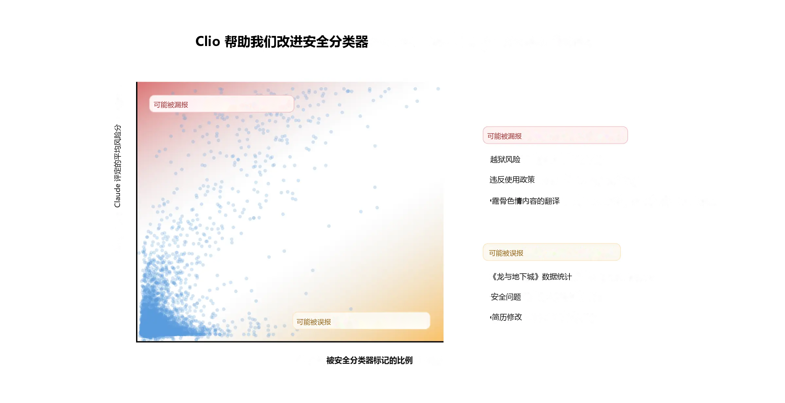

Clio：保护隐私的真实AI使用洞察系统
📖 中文摘要
专业术语注解
语义聚类：把意思相近的内容自动归为同一组匿名化：去除可识别个人身份的信息后再分析误报与漏报：把无害内容错判为有害（误报），或漏掉真正有害内容（漏报）信任与安全分类器：自动判断内容是否违反使用规则的系统多层级防护：多层叠加的安全措施，一层被绕过还有下一层📄 中文全文
- 分类： 社会影响
- 来源： https://www.anthropic.com/research/clio
社会影响 2024 年 12 月 12 日 阅读论文 * 更新 消费者条款与隐私政策 2025 年 8 月 28 日
人们用 AI 模型做什么？尽管大语言模型越来越受欢迎，但直到现在，我们对它们究竟被如何使用几乎毫无洞察。 这不仅仅是出于好奇，甚至也不只是社会学研究的问题。了解人们实际如何使用语言模型对于安全很重要：提供商在部署前测试上投入了大量精力，并使用信任与安全系统来防止滥用。但语言模型所能做的事情的规模和多样性，使得理解它们的用途——更不用说任何全面的安全监控——变得非常困难。 还有一个至关重要的因素阻碍着对 AI 模型使用的清晰理解：隐私。在 Anthropic，我们非常重视用户数据的保护。那么，我们如何在严格维护用户隐私的同时研究和观察我们的系统是如何被使用的呢？ Cl aude i nsights and o bservations（Claude 洞察与观察），即"Clio"，是我们回答这个问题的尝试。Clio 是一个自动化分析工具，能够对现实世界语言模型的使用进行保护隐私的分析。它以类似于 Google Trends 等工具的方式，让我们洞察 claude.ai 的日常用途。它也已经帮助我们改进安全措施。在这篇文章中——与一篇完整研究论文配套——我们描述 Clio 及其一些初步结果。
Clio 如何运作：规模化的隐私保护分析
传统的、自上而下的安全方法（如评估和红队测试）依赖于预先知道要寻找什么。Clio 采取不同的方法，通过将对话提炼为抽象的、可理解的主题簇，实现自下而上的模式发现。它在保护用户隐私的同时做到这一点：数据被自动匿名化和聚合，只有更高级别的簇对人类分析师可见。
 Clio 分析步骤的摘要，使用虚构的对话示例进行说明。
以下是 Clio 多阶段流程的简要总结：
1. 提取方面（facets）：对每次对话，Clio 提取多个"方面"——特定的属性或元数据，如对话主题、对话中的来回轮数或使用的语言。
2. 语义聚类：相似的对话按主题或一般话题自动分组。
3. 簇描述：每个簇获得一个描述性标题和摘要，从原始数据中捕捉共同主题，同时排除私人信息。
4. 构建层级：簇被组织成多级层级结构，便于探索。然后可以在交互式界面中呈现，Anthropic 的分析师可以使用该界面在不同维度（主题、语言等）上探索模式。
Clio 分析步骤的摘要，使用虚构的对话示例进行说明。
以下是 Clio 多阶段流程的简要总结：
1. 提取方面（facets）：对每次对话，Clio 提取多个"方面"——特定的属性或元数据，如对话主题、对话中的来回轮数或使用的语言。
2. 语义聚类：相似的对话按主题或一般话题自动分组。
3. 簇描述：每个簇获得一个描述性标题和摘要，从原始数据中捕捉共同主题，同时排除私人信息。
4. 构建层级：簇被组织成多级层级结构，便于探索。然后可以在交互式界面中呈现，Anthropic 的分析师可以使用该界面在不同维度（主题、语言等）上探索模式。
这四个步骤完全由 Claude 驱动，而不是人类分析师。这是我们 Clio 隐私优先设计的一部分，具有多层"纵深防御"。例如，Clio 被指示从对话中提取相关信息，同时省略私人细节。我们还有一个唯一用户或对话数量的最低阈值，这样低频主题（可能对个人有特异性）就不会被无意中暴露。作为最后一道检查，Claude 在簇摘要显示给人类用户之前，会验证它们不包含任何过于具体或可识别的信息。 我们所有的隐私保护都经过了广泛测试，如我们在研究论文中所述。
人们如何使用 Claude：来自 Clio 的洞察
利用 Clio，我们得以深入了解人们在实际中如何使用 claude.ai。虽然 WildChat 和 LMSYS-Chat-1M 等公共数据集提供了人们如何使用语言模型的有用信息，但它们只捕捉特定的情境和用例。Clio 让我们能够理解 claude.ai 现实世界使用的完整谱系（由于用户群体和模型类型的差异，这可能与 AI 系统其他用途看起来不同）。
Claude.ai 上的顶级用例
我们用 Clio 分析了 claude.ai（Free 和 Pro 层级）上与 Claude 的 100 万次对话，以识别人们使用 Claude 的首要任务。这揭示了编程相关任务的突出地位："Web 和移动应用开发"类别占所有对话的 10% 以上。软件开发者使用 Claude 完成从调试代码到解释 Git 操作和概念等任务。

用户与 Claude 最常见的对话类型，涵盖所有语言。圆的面积对应对话的百分比；标题是 Clio 在分析 100 万次随机选择的对话后生成的摘要。 教育用途构成另一个重要类别，超过 7% 的对话聚焦于教学和学习。相当大比例的对话（近 6%）涉及商业战略和运营（包括起草专业沟通和分析业务数据等任务）。 Clio 还识别出数千个较小的对话簇，展示了 Claude 用途的丰富多样性。其中一些可能令人惊讶，包括： * 解梦； * 分析足球比赛； * 防灾准备； * 填字游戏的"提示"； * _龙与地下城_游戏； * 数"strawberry"一词中 r 的数量。Claude 的使用因语言而异
Claude 的使用在不同语言之间存在显著差异，反映了不同的文化背景和需求。我们计算了每种语言在对话总体中出现的基准频率，由此可以识别出某语言出现频率远高于通常水平的主题。下图展示了西班牙语、中文和日语的一些示例。

Clio 揭示的三种选定语言中出现频率更高的对话主题（与该语言的基准频率相比）。我们如何用 Clio 改进安全系统
除了训练我们的语言模型拒绝有害请求之外，我们还使用专门的信任与安全执法系统来检测、阻止并处理可能违反我们使用政策的活动。Clio 补充了这项工作，帮助我们了解在哪些地方有机会改进和加强这些系统。 在谁可以使用 Clio 来进一步执行我们的政策方面，我们实施了严格的隐私访问控制，因为它可能需要审查个别账户。我们的信任与安全团队能够审查主题簇，寻找可能违反我们使用政策的领域。例如，一个标题为"为筹款竞选电子邮件生成误导性内容"或"煽动仇恨行为"的簇描述了我们所禁止的活动。我们的信任与安全团队可以使用这种自下而上的审查方法来识别需要进一步审查的个别账户，并在适当的情况下根据我们的条款和政策采取行动。我们严格将这类审查限制在有正当信任与安全需求的人员范围内。我们的研究论文包含有关这些流程的更多信息。 我们仍在将 Clio 推广到所有执法系统的过程中，但到目前为止，它已被证明是我们安全工具包中一个有用的组成部分，帮助我们发现了需要加强的防护措施领域。
识别并阻止协同滥用
Clio 在识别协同的、复杂的滥用模式方面已被证明有效，这些模式在查看单个对话时是不可见的，并且可能逃脱更简单的检测方法。例如，在 9 月下旬，我们识别出一个自动化账户网络，使用相似的提示结构为搜索引擎优化生成垃圾内容。虽然没有任何单个对话违反我们的使用政策，但跨账户的行为模式揭示了一种我们在政策中明确禁止的协同平台滥用形式，我们移除了该账户网络。我们还使用 Clio 识别了使用政策禁止的其他活动，例如试图转售未经授权的 Claude 访问权限。
对高风险事件加强监控
Clio 还帮助我们在不确定时期或高风险事件期间监控新用途和风险。例如，在推出新的计算机使用功能之前，我们进行了广泛的安全测试，同时使用 Clio 筛查我们可能遗漏的新兴能力和危害1。Clio 在这里提供了额外的保障，也提供了帮助我们持续改进安全措施的洞察，贯穿整个推广过程以及我们系统的未来版本。 Clio 还帮助我们在大选或重大国际活动等重要公共事件前夕监控未知风险。在 2024 年美国大选之前的几个月里，我们使用 Clio识别与美国政治、投票和相关问题有关的活动簇，并防范任何潜在风险或滥用。Clio 实现的检测"未知的未知"的能力，补充了我们的主动安全措施，帮助我们对新挑战做出快速响应。
减少漏报和误报
总体而言，在哪些对话簇被视为令人担忧方面，Clio 与我们现有的信任与安全分类器是一致的。然而，某些簇存在一些分歧。一个改进机会是漏报（当系统没有将特定对话标记为潜在有害而事实上它确实有害时）。例如，当用户要求 Claude 从一种语言翻译成另一种语言时，我们的系统有时未能标记违规内容。然而，Clio 发现了这些对话。

对话簇的散点图（一个点 = 一个簇）以及它们被我们的信任与安全分类器（x 轴）和 Clio（y 轴）标记为令人担忧的程度。左上角是可能被我们的信任与安全分类器漏标的簇：包含令人担忧内容但未必被标记的漏报。右下角是可能被过度标记的簇：可能不包含令人担忧内容的误报。信任与安全分类与 Clio 分类之间的总体相关性为 r = 0.71，表明两个系统之间存在广泛的总体一致。 我们还使用 Clio 调查误报——开发信任与安全分类器时的另一个常见挑战，即分类器无意中将良性内容标记为有害。例如，求职者就其简历寻求建议的对话有时会被我们的分类器错误标记（因为包含个人信息）。与安全、网络或网页抓取相关的编程问题偶尔会被误识别为潜在的黑客尝试。即使是上述_龙与地下城_对话中关于战斗统计的讨论，有时也会触发我们的危害检测系统。我们使用 Clio 来突出这些错误决定，帮助我们的安全系统只对真正违反我们政策的内容触发，否则就不打扰我们的用户。伦理考量与缓解措施
Clio 为改进已部署语言模型的安全性提供了宝贵的洞察。然而，它也提出了一些重要的伦理考量，我们在开发系统时考虑并解决了这些问题： * 误报： 在信任与安全背景下，我们就潜在的误报实施了关键保障措施。例如，目前我们不使用 Clio 的输出进行自动化执法行动，并且我们广泛验证其在不同数据分布上的表现——包括跨多种语言的测试，如我们在论文中详述的。 * Clio 的滥用： 像 Clio 这样的系统可能被滥用于不适当的监控。除了严格访问控制和我们的隐私技术之外，我们通过实施严格的数据最小化和保留政策来缓解这一风险：我们只为 Clio 收集和保留必要的最少量数据。 * 用户隐私： 尽管 Clio 在我们的隐私评估中表现出色，但与任何现实世界的隐私系统一样，我们的系统可能无法捕捉某些类型的私人信息。为缓解这一潜在风险，我们定期对 Clio 的隐私保护和评估进行审计，以确保我们的保障措施按预期运行。随着时间的推移，我们还计划在 Clio 中使用最新的 Claude 模型，以便持续改进这些保障措施的性能。 * 用户信任： 尽管我们有广泛的隐私保护，一些用户可能认为 Clio 这样的系统具有侵入性或干扰他们使用 Claude。我们选择对 Clio 的目的、能力、局限性以及我们从中学到的洞察保持透明。正如我们上面提到的，在某些情况下，Clio 识别出我们标准安全分类器中的误报（在看起来有违反我们使用政策的活动而实际没有的地方），这可能让我们_更少_干预模型的合法使用。
结论
Clio 是迈向基于实证的 AI 安全和治理的重要一步。通过实现保护隐私的现实世界 AI 使用分析，我们可以更好地理解这些系统实际上是如何被使用的。最终，我们可以用 Clio 让 AI 系统更安全。 AI 提供商肩负双重责任：维护其系统的安全，同时保护用户隐私。Clio 证明这些目标并非相互排斥——通过精心设计和实施，我们可以两者兼得。通过公开讨论 Clio，我们旨在为这类工具负责任的开发和使用做出积极规范贡献。 我们正在继续开发和改进 Clio，我们希望其他人能够在此基础上继续推进。关于 Clio 的更多技术细节，包括我们的隐私验证和评估方法，请参阅完整研究论文。 我们目前正在为社会影响团队招聘。如果你有兴趣研究 Clio 或相关问题，我们很乐意收到你的申请。你可以在这个链接找到更多关于该职位的资讯。 2025 年 1 月 14 日编辑： 本文中指向 Clio 论文的链接已更新为指向 arXiv 版本。
脚注
1 出于安全调查目的，我们还在第一方 API 流量的一个子集上运行 Clio，并将结果限制在授权人员范围内。某些账户被排除在分析之外，包括签订了零保留协议的受信任组织。关于我们政策的更多信息，请参阅研究论文附录 F。
相关内容
了解更多关于 Claude 的数学能力
一个未发布的研究版 Claude 在与黎曼猜想相关的问题上取得了进展。它改进了一个长期存在的下界——满足该猜想的黎曼 zeta 函数零点比例，从 41.6% 提高到 67.2%。 阅读更多
用 Claude 发现密码学弱点
密码算法。第一个攻击显著削弱了 HAWK——一种为未来量子计算机能够破解现有标准的时代而构建的数字签名方案。第二个攻击发现了一种攻击缩减轮数 AES（使用最广泛的分组密码）的新方法。 阅读更多
项目 Pilot：AI 能控制无人机吗？
我们与 Andon Labs 合作，开发了一系列新的评估，考察 AI 模型使用飞行无人机的能力，最终形成了一个新基准：Drone-Bench。 阅读更多
▸ 英文原文（点击展开）
Clio: A system for privacy-preserving insights into real-world AI use
- Category: Societal Impacts
- Source: https://www.anthropic.com/research/clio
Societal Impacts
Clio: A system for privacy-preserving insights into real-world AI use
Dec 12, 2024 Read the paper * Update Consumer Terms and Privacy Policy Aug 28, 2025
What do people use AI models for? Despite the rapidly-growing popularity of large language models, until now we’ve had little insight into exactly how they’re being used. This isn’t just a matter of curiosity, or even of sociological research. Knowing how people actually use language models is important for safety reasons: providers put considerable effort into pre-deployment testing, and use Trust and Safety systems to prevent abuses. But the sheer scale and diversity of what language models can do makes understanding their uses—not to mention any kind of comprehensive safety monitoring—very difficult. There’s also a crucially important factor standing in the way of a clear understanding of AI model use: privacy. At Anthropic, we take the protection of our users’ data very seriously. How, then, can we research and observe how our systems are used while rigorously maintaining user privacy? Cl aude i nsights and o bservations, or “Clio,” is our attempt to answer this question. Clio is an automated analysis tool that enables privacy-preserving analysis of real-world language model use. It gives us insights into the day-to-day uses of claude.ai in a way that’s analogous to tools like Google Trends. It’s also already helping us improve our safety measures. In this post—which accompanies a full research paper—we describe Clio and some of its initial results.
How Clio works: Privacy-preserving analysis at scale
Traditional, top-down safety approaches (such as evaluations and red teaming) rely on knowing what to look for in advance. Clio takes a different approach, enabling bottom-up discovery of patterns by distilling conversations into abstracted, understandable topic clusters. It does so while preserving user privacy: data are automatically anonymized and aggregated, and only the higher-level clusters are visible to human analysts.
A summary of Clio’s analysis steps, using imaginary conversation examples for illustration.
Here is a brief summary of Clio’s multi-stage process:
1. Extracting facets : For each conversation, Clio extracts multiple "facets"—specific attributes or metadata such as the conversation topic, number of back-and-forth turns in the conversation, or the language used.
2. Semantic clustering : Similar conversations are automatically grouped together by theme or general topic.
3. Cluster description : Each cluster receives a descriptive title and summary that captures common themes from the raw data while excluding private information.
4. Building hierarchies : Clusters are organized into a multi-level hierarchy for easier exploration. They can then be presented in an interactive interface that analysts at Anthropic can use to explore patterns across different dimensions (topic, language, etc.).
These four steps are powered entirely by Claude, not by human analysts. This is part of our privacy-first design of Clio, with multiple layers to create “defense in depth.” For example, Claude is instructed to extract relevant information from conversations while omitting private details. We also have a minimum threshold for the number of unique users or conversations, so that low-frequency topics (which might be specific to individuals) aren’t inadvertently exposed. As a final check, Claude verifies that cluster summaries don’t contain any overly specific or identifying information before they’re displayed to the human user. All our privacy protections have been extensively tested, as we describe in the research paper.
How people use Claude: Insights from Clio
Using Clio, we've been able to glean high-level insights into how people use claude.ai in practice. While public datasets like WildChat and LMSYS-Chat-1M provide useful information on how people use language models, they only capture specific contexts and use cases. Clio allows us to understand the full spectrum of real-world usage of claude.ai (which may look different than usage of other AI systems due to differences in user bases and model types).
Top use cases on Claude.ai
We used Clio to analyze 1 million conversations with Claude on claude.ai (both the Free and Pro tiers) to identify the top tasks people use Claude for. This revealed a particular emphasis on coding-related tasks: the "Web and mobile application development" category represented over 10% of all conversations. Software developers use Claude for tasks ranging from debugging code to explaining Git operations and concepts.
The most common types of conversations users had with Claude, across all languages. The area of the circle corresponds to the percentage of conversations; the titles are summaries generated by Clio after analyzing 1 million randomly-selected conversations.
Educational uses formed another significant category, with more than 7% of conversations focusing on teaching and learning. A substantial percentage of conversations (nearly 6%) concerned business strategy and operations (including tasks like drafting professional communications and analyzing business data).
Clio also identified thousands of smaller conversation clusters, showing the rich variety of uses for Claude. Some of these were perhaps surprising, including:
* Dream interpretation;
* Analysis of soccer matches;
* Disaster preparedness;
* “Hints” for crossword puzzles;
* Dungeons & Dragons gaming;
* Counting the r’s in the word “strawberry”.
Claude usage varies by language
Claude usage varies considerably across languages, reflecting varying cultural contexts and needs. We calculated a base rate of how often each language appeared in conversations overall, and from there we could identify topics where a given language appeared much more frequently than usual. Some examples for Spanish, Chinese, and Japanese are shown in the figure below.
Conversation topics that appeared more frequently in three selected languages (compared to the base rate of that language), as revealed by Clio.
How we improve our safety systems with Clio
In addition to training our language models to refuse harmful requests, we also use dedicated Trust and Safety enforcement systems to detect, block, and take action on activity that might violate our Usage Policy. Clio supplements this work to help us understand where there might be opportunities to improve and strengthen these systems. We implement strict privacy access controls when it comes to who can use Clio to further enforce our policies because it may require review of individual accounts. Our Trust and Safety team is able to review topic clusters for areas that indicate likely violations of our Usage Policy. For example, a cluster titled “generate misleading content for campaign fundraising emails” or “incite hateful behavior” describes activity we prohibit. Our Trust and Safety teams can use this bottom-up review approach to identify individual accounts for further review and, if appropriate, take action in accordance with our terms and policies. We strictly limit this type of review to those with legitimate Trust and Safety needs. Our research paper includes more information on these processes. We’re still in the process of rolling out Clio across all of our enforcement systems, but so far it has proven to be a useful part of our safety tool kit, helping us discover areas of our protective measures that we need to strengthen.
Identifying and blocking coordinated misuse
Clio has proven effective at identifying patterns of coordinated, sophisticated misuse that would otherwise be invisible when looking at individual conversations, and that might evade simpler detection methods. For example in late September, we identified a network of automated accounts using similar prompt structures to generate spam for search engine optimization. While no individual conversation violated our Usage Policy, the pattern of behavior across accounts revealed a form of coordinated platform abuse we explicitly prohibit in our policy and we removed the network of accounts. We’ve also used Clio to identify other activity prohibited by our Usage Policy, such as attempting to resell unauthorized access to Claude.
Enhanced monitoring for high-stakes events
Clio also helps us monitor novel uses and risks during periods of uncertainty or high-stakes events. For example, while we conducted a wide range of safety tests in advance of launching a new computer use feature, we used Clio to screen for emergent capabilities and harms we might have missed1. Clio provided an additional safeguard here, as well as insights that helped us continually improve our safety measures throughout the rollout and in future versions of our systems. Clio has also helped us monitor for unknown risks in the run up to important public events like elections or major international events. In the months preceding the 2024 US General Election, we used Clio to identify clusters of activity relating to US politics, voting, and related issues, and guard against any potential risks or misuse. The ability to detect “unknown unknowns,” made possible through Clio, complements our proactive safety measures and helps us respond quickly to new challenges.
Reducing false negatives and false positives
In general, there was agreement between Clio and our pre-existing Trust and Safety classifiers on which conversation clusters were considered concerning. However, there was some disagreement for some clusters. One opportunity for improvement was false negatives (when a system didn’t flag a particular conversation as potentially harmful when in fact it was). For example, our systems sometimes failed to flag violating content when the user asked Claude to translate from one language to another. Clio, however, spotted these conversations.
Scatterplot of conversation clusters (one dot = one cluster) and the extent to which they were flagged as concerning according to our Trust and Safety classifiers (x-axis) and according to Clio (y-axis). In the top left are clusters that were potentially under-flagged by our Trust and Safety classifiers: false negatives that contained concerning content that wasn’t necessarily flagged. In the bottom right are clusters that were potentially over-flagged: false positives that likely did not contain concerning content. The overall correlation between the Trust and Safety and the Clio classifications was r = 0.71, indicating broad overall agreement between the two systems.
We also used Clio to investigate false positives—another common challenge when developing Trust and Safety classifiers, where the classifier inadvertently tags benign content as harmful. For example, conversations from job seekers requesting advice on their own resumes were sometimes incorrectly flagged by our classifiers (due to the presence of personal information). Programming questions related to security, networking, or web scraping were occasionally misidentified as potential hacking attempts. Even conversations about combat statistics in the aforementioned Dungeons & Dragons conversations sometimes triggered our harm detection systems. We used Clio to highlight these erroneous decisions, helping our safety systems to trigger only for content that really does violate our policies, and otherwise keep out of our users’ way.
Ethical considerations and mitigations
Clio provides valuable insights for improving the safety of deployed language models. However, it did also raise some important ethical considerations that we considered and addressed while developing the system: * False positives: In the Trust and Safety context, we've implemented key safeguards with respect to potential false positives. For example, at this time we don't use Clio’s outputs for automated enforcement actions, and we extensively validate its performance across different data distributions—including testing across multiple languages, as we detail in our paper. * Misuse of Clio: A system like Clio could be misused to engage in inappropriate monitoring. In addition to strict access controls and our privacy techniques, we mitigate this risk by implementing strict data minimization and retention policies: we only collect and retain the minimum amount of data necessary for Clio. * User privacy: Despite Clio's strong performance in our privacy evaluations, it's possible, as with any real-world privacy system, that our systems might not catch certain kinds of private information. To mitigate this potential risk, we regularly conduct audits of our privacy protections and evaluations for Clio to ensure our safeguards are performing as expected. As time goes on, we also plan to use the latest Claude models in Clio so we can continuously improve the performance of these safeguards. * User trust: Despite our extensive privacy protections, some users might perceive a system like Clio as invasive or as interfering with their use of Claude. We've chosen to be transparent about Clio's purpose, capabilities, limitations, and what insights we’ve learned from it. And as we noted above, there are instances where Clio identified false positives (where it appeared there was activity violating our usage policy where there wasn’t) in our standard safety classifiers, potentially allowing us to interfere less in legitimate uses of the model.
Conclusions
Clio is an important step toward empirically grounded AI safety and governance. By enabling privacy-preserving analysis of real-world AI usage, we can better understand how these systems are actually used. Ultimately, we can use Clio to make AI systems safer. AI providers have a dual responsibility: to maintain the safety of their systems while protecting user privacy. Clio demonstrates that these goals aren't mutually exclusive—with careful design and implementation, we can achieve both. By openly discussing Clio, we aim to contribute to positive norms around the responsible development and use of such tools. We're continuing to develop and improve Clio, and we hope that others will build upon this work. For additional technical details about Clio, including our privacy validations and evaluation methods, please see the full research paper. We’re currently hiring for our Societal Impacts team. If you’re interested in working on Clio or related research questions, we'd love to receive your application. You can find more information about the roleat this link. Edit 14 January 2025: Links to the Clio paper in this post have been updated to point to the arXiv version.
Footnotes
1 For safety investigations, we also run Clio on a subset of first-party API traffic, keeping results restricted to authorized staff. Certain accounts are excluded from analysis, including trusted organizations with zero retention agreements. For more information about our policies, see Appendix F in the research paper.
Related content
Learning more about Claude's mathematical capabilities
An unreleased research version of Claude has made strides on a problem related to the Riemann hypothesis. It improved a longstanding lower bound for the fraction of zeros of the Riemann zeta function that satisfy the hypothesis, increasing it from 41.6% to 67.2%. Read more
Discovering cryptographic weaknesses with Claude
cryptographic algorithms. The first attack significantly weakens HAWK, a digital signature scheme that was built for a future world where quantum computers are able to break existing standards. The second identifies a new way to attack round-reduced AES, the most widely used symmetric cipher. Read more
Project Pilot: Can AI control a drone?
Working with Andon Labs, we’ve developed a new series of evaluations that assess AI models’ ability to use a flying drone, culminating in a new benchmark: Drone-Bench. Read more